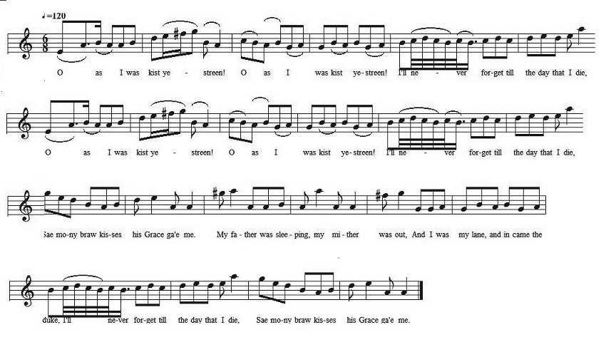

Kist the Streen
Les baisers d'hier
On the Duke of Argyll
From David Herd's MS Collection (c.1770) and
Johnson's "Museum", vol IV, n°319, 1792
Tune - Mélodie
"O as I was kissed yestreen"
from Hogg's "Jacobite Relics" 2nd Series N°63
Sequenced by Christian Souchon

|
To the tune:
Bayard (1981) identifies "O as I was kiss'd yestreen" as the signature melody of a group of tunes that belongs to a very large extended family of tunes, which he likens to a language and its dialects. John Glen (1891) finds the earliest appearance of the tune in print in - Robert Bremner's 1757 collection , - then in James Aird's "Selection...", 1778, Vol. 1, No. 200. In Bremner (Scots Reels), 1757, pg. 75, it appears as “O as I was Kiss’d the Streen”). It wil also be found: - in Oswald's Caledonian Pocket Companion (1780?, Vol. 1, pg. 137). - in Gow's "Complete Repository", Part 2, 1802; pg. 22, and - in Johnson's "Scots Musical Museum", Vol. 4 (1792), No. 319. Source "The Fiddler's Companion" (cf. Links). Allan Ramsay directs to sing tune N°15 "Now from Rusticity and Love..." in his "Gentle Shepherd" (1725) to a tune he calls "Wat ye wha I met yestreen?" (Guess who I met yesterday night!) that is the first line of his song "The young laird and Edinburgh Katy" printed in his Tea Table Miscellany, Volume I (1724). This song is notated in the Second Collection of Niel Gow’s Reels, 1788 and seems to be a variant to "O, as I was kiss'd yestreen". |
A propos de la mélodie:
Bayard (1981) voit dans "O as I was kiss'd yestreen", l'une des mélodies - types qui fait partie d'une série donc chacune est l'archétype de toute une catégorie de chants. Il parle d'une langue subdivisée en dialectes. John Glen (1891) décèle la première publication imprimée de cette mélodie chez - Robert Bremner, dans son recueil de 1757 , - puis chez James Aird, dans sa "Sélection...", 1778, Vol. 1, No. 200. Chez Bremner ("Scots Reels"), 1757, pg. 75, elle est intitulée “O as I was Kiss’d the Streen”). On la trouve aussi: - chez Oswald: Caledonian Pocket Companion (1780?, Vol. 1, pg. 137). - chez Gow: "Complete Repository", Part 2, 1802; pg. 22, et - dans le "Scots Musical Museum" de Johnson: Vol. 4 (1792), No. 319. Source "The Fiddler's Companion" (cf. Liens). Allan Ramsay donne comme timbre du chant N°15 "Now from Rusticity and Love..." dans son Gentle Shepherd (1725) une mélodie qu'il appelle "Wat ye wha I met yestreen?" (Devine qui j'ai vu hier soir!). C'est le début de son chant "Le jeune seigneur et Catherine d'Edimbourg" qu'on trouve au 1er vol. de ses "Miscellanées de la Table de thé" (1724). La partition est publiée par Niel Gow dans sa "2ème Collection de reels" (1788); c'est une variante de "O, as I was kiss'd yestreen". |

|
KIST THE STREEN
On the late Duke of Argyle 1. O as I was kist yestreen! O as I was kist yestreen! I'll never forget till the day that I die, Sae mony braw kisses his Grace ga'e me. 2. My father was sleeping, my mither was out, And I was my lane, and in came the duke, I'll never forget till the day that I die, Sae mony braw kisses his Grace ga'e me. 3. Kist the streen, kissed the streen Up the Gallowgate, down the Green: I'll never forget till the day that I die, Sae mony braw kisses his Grace ga'e me. **** Kiss ye, Jean, Kiss ye, Jean, Never let an auld man kiss ye, Jean! An auld man's nae man till a young quean: Never let an auld man kiss ye, Jean! Source: Songs from Herd's Manuscripts (c.1770) edited by Hans Hecht in 1904. Song N°34 page 138 (MS. I,68 a) |
LES BAISERS D'HIER
Sur feu le Duc d'Argyll 1. Oh, les baisers qu'on m'a donnés hier Oui les baiser qu'hier on m'a donnés De tous mes souvenirs c'est le plus cher. Ah, comme sa Grâce sait embrasser! 2. Mon père dormait, mère était sortie, J'étais seule quand le duc est entré. C'est le plus beau souvenir de ma vie! Ah, comme sa Grâce sait embrasser! 3. Les baisers d'hier, les baisers d'hier, Sur le Gallowgate et le Boulingrin: De tous mes souvenirs c'est le plus cher. Ah, sa Grâce sait embrasser si bien! **** T'embrasser, t'embrasser, Ne laisse, Jeanne, aucun vieux t'embrasser! Pour un vieux une jeune n'est point faite. Ne laisse, Jeanne, aucun vieux t'embrasser! (Trad. Christian Souchon (c) 2010) |
|
[1]
Duke of Argyle
: Sir Walter Scott identifies the hero of this poem as Duke Argyle of Hamilton, in a remark on the margin of the MS.
In the index to the "Museum", vol.4, it is stated that the song was written "on an amour of John Duke of Argyle ", which agrees with Scott's note. [2] Up the Gallowgate, down the Green : was the favourite promenade of Glasgow lads and lasses. (Note by Hans Hecht) |
[1]
Duke of Argyle
: Sir Walter Scott identifie le héros de ce poème comme étant le duc D'Argyll de Hamilton, dans une note en marge portée sur le manuscrit.
Dans l'index du "Musée", vol. 4, il est dit que le sujet du chant est une "amourette du duc John d'Argyll ", ce qui corrobore la note de Scott. [2] Sur le Gallowgate et le Boulingrin : promenade préférée des jeunes gens de Glasgow. (Note de Hans Hecht). |
|
|
|